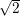

| Up | Next | Prev | PrevTail | Tail |
The polynomial division discussed above is normally most useful for a univariate polynomial over a field, otherwise the division is likely to fail giving trivially a zero quotient and a remainder equal to the dividend. (A ring of univariate polynomials is a Euclidean domain only if the coefficient ring is a field.) For example, over the integers:
The division of a polynomial u(x) of degree m by a polynomial v(x) of degree n ≤ m can be performed over any commutative ring with identity (such as the integers, or any polynomial ring) if the polynomial u(x) is first multiplied by lc(v,x)m-n+1 (where lc denotes the leading coefficient). This is called pseudo-division. The polynomial pseudo-division operators pseudo_divide, pseudo_quotient (or pseudo_div) and pseudo_remainder are implemented as prefix operators (only). When multivariate polynomials are pseudo-divided it is important which variable is taken as the main variable, because the leading coefficient of the divisor is computed with respect to this variable. Therefore, if this is allowed to default and there is any ambiguity, i.e. the polynomials are multivariate or contain more than one kernel, the pseudo-division operators output a warning message to indicate which kernel has been selected as the main variable – it is the first kernel found in the internal forms of the dividend and divisor. (As usual, the warning can be turned off by setting the switch msg to off.) For example
If the leading coefficient of the divisor is a unit (invertible element) of the coefficient ring then division and pseudo-division should be identical, otherwise they are not, e.g.
The pseudo-division gives essentially the same result as would division over the field of fractions of the coefficient ring (apart from the overall factors [contents] of the quotient and remainder), e.g.
Polynomial division and pseudo-division can only be applied to what REDUCE regards as polynomials, i.e. rational expressions with denominator 1, e.g.
Pseudo-division is implemented in the polydiv package using an algorithm (D. E. Knuth 1981, Seminumerical Algorithms, Algorithm R, page 407) that does not perform any actual division at all (which proves that it applies over a ring). It is more efficient than the naive algorithm, and it also has the advantage that it works over coefficient domains in which REDUCE may not be able to perform in practice divisions that are possible mathematically. An example of this is coefficient domains involving algebraic numbers, such as the integers extended by , as illustrated in the file polydiv.tst.
The implementation attempts to be reasonably efficient, except that it always computes the quotient internally even when only the remainder is required (as does the standard remainder operator).
| Up | Next | Prev | PrevTail | Front |